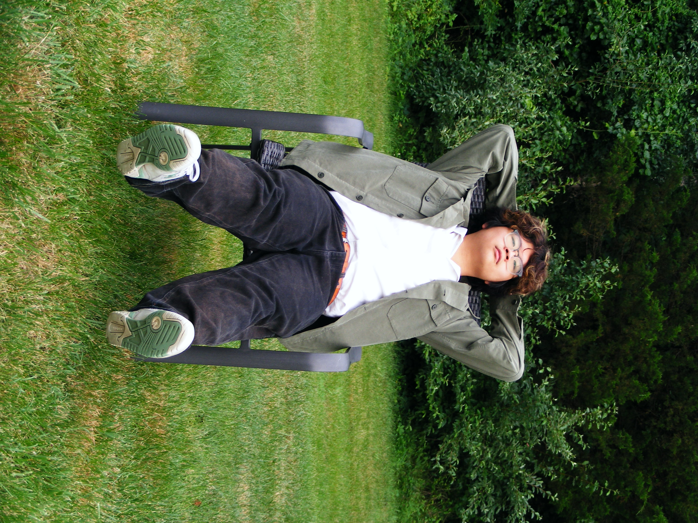

Brandon Shen (b. 2006), Chinese-American composer and multimedia artist, hails from Chantilly, VA. Currently studying composition and arts administration at UT Austin, his current interests include internet forms and culture, ecology, and ludic music.
